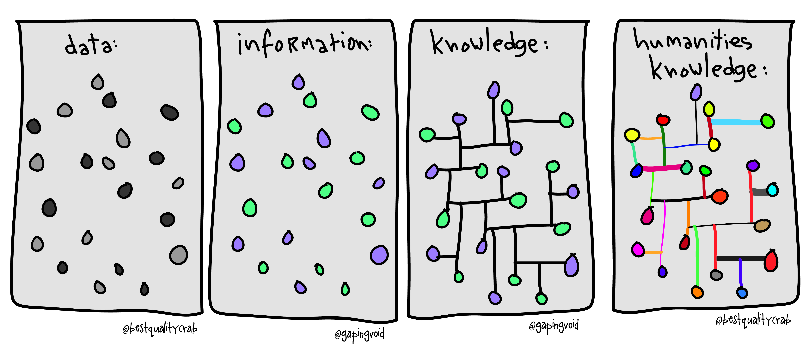
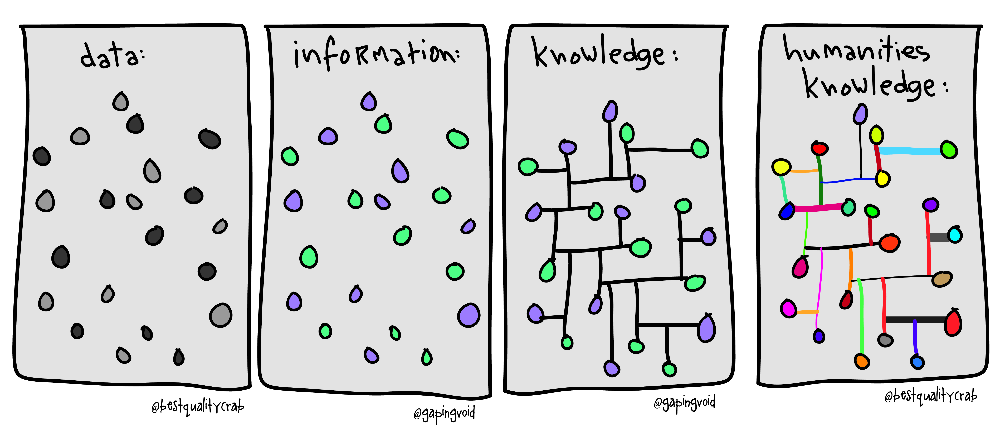
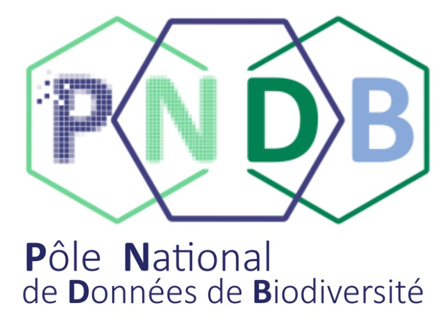
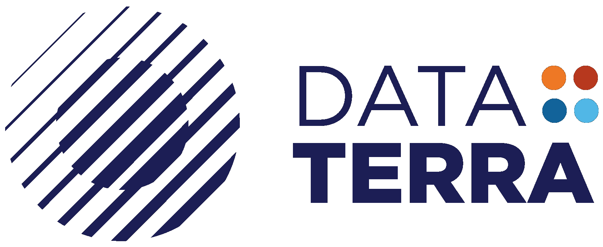

Table of contents

Current challenges
Data and metadata
Data types
Framework and good practices
Open Science
Second French Plan for Open Science1
France is committed to ensuring that the results of scientific research are open to all, researchers, companies and citizens, without hindrance, without delay, without payment.

- Axe 1 : Generalize open access to publications
- Axe 2 : Structure, share and open research data
- Axe 3 : Open and promote source codes produced by research
- Axe 4 : Transforming practices to make open science the default principle
Heterogeneity and loss of informations


Heterogeneity (data types, origin, standards) &
Diversity of “objects” to be linked together1
Loss of information over time2
A complex landscape
A note are to support producers and reusers of biodiversity data and metadata in:
- Understanding the landscape (actors, who does what, who is who, etc.)
- Sharing (meta)data (where to deposit, what types of data, etc.)
- Using the latter via the complementary of information systems according to the themes and/or target audiences
The targets of this note are above all researchers, managers, engineers and data technicians

- Version 1 is available here
- Version 2 will be available soon in January 2025
A complex landscape

A complex landscape

What is reproducibility?

Reproducibility is about results that can be obtained by someone else (or you in the future) given the same data and the same code. This is a technical problem.
We talk about Computational reproducibility
What is reproducibility?


Computational reproducibility frequently refers to the ability to generate equivalent analytical outcomes from the same data set using the same code and software1.
[…] all raw data and metadata, code, programming scripts, and bespoke software necessary for fully replicating any analyses that lead to inferences made in a published study2.
Reproducibility spectrum

Each degree of reproducibility requires additional skills and time. While some of those skills (e.g. literal programming, version control, setting up environments) pay off in the long run, they can require a high up-front investment.
Definitions
“Research data are defined as factual records in the form of figures, texts, images and sounds which are used as the main sources for scientific research and which the scientific community generally recognizes as being necessary to validate research results”1.

“Metadata, which can be simply defined as “data about data,” is a way of naming things and representing data and their relationships […] Metadata is structured information that describes, explains, locates, or otherwise makes it easier to retrieve, use or manage an information resource”2.


Characterizing data
Link this information with your biodiversity research projects
Imagine: you’re wondering about the distribution of a given species.
Characterizing data
- what species ? –> observation data: presence/absence, abundance, density, biomass ?
but also: what are the intra-population variations ? DNA, trait measurements ? phylogeny ?
where are they spatially ? in which proportions ?
when were they observed or sampled ? repeated measures ? time stamp or global period ?
how were they collected ? biases ? pseudoreplication ? true absences ?
why and who : citizen science ? opportunistic ? funding ?
Data categories: by format
According to the EML classification1
- Data Table
- Spatial raster
- Spatial vector
- Databases
- Other entities


Data categories: by type
According to Kissling WD et al. (2018)
- Citizen science
- Sensors
- DNA-based techniques
- Satellite remote sensing
- Others (simulated data)

Frameworks and Good practices
Data life cycle

FAIR Principles

Flux and stocks of data
Data life cycle
The data lifecycle is the set of stages of management, conservation and dissemination of research data, associated with research activities.
For more information: PNDB
FAIR principles
A set of guiding principles for managing research data to make it Findable, Accessible, Interoperable, and Reusable by humans and machines1.
This is the way!

For more information: PNDB

FAIR principles

Flux and stocks
Flux and stocks
Sharing data and metadata from research activities requires making them available in repositories.
It is recommended to prioritize deposits in trusted thematic repositories (eg. InDoRES, SEANOE, …), or failing that in institutional repositories (eg. Data SUD, CIRAD Dataverse, …), or failing that, in generic repositories such as the Recherche Data Gouv repository. Resources exist for choosing the adapted and recommended data repository.

Take home message
- Heterogeneity (data types, origin, standards) & diversity of “objects” to be linked together1
- Loss of information over time2
- Toward a better open science and reproducibility 3 4
 

Resources
PNDB - Data Terra
 